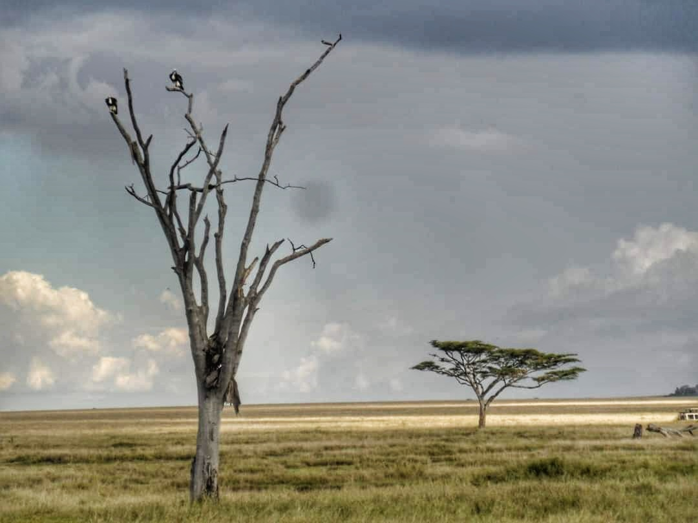
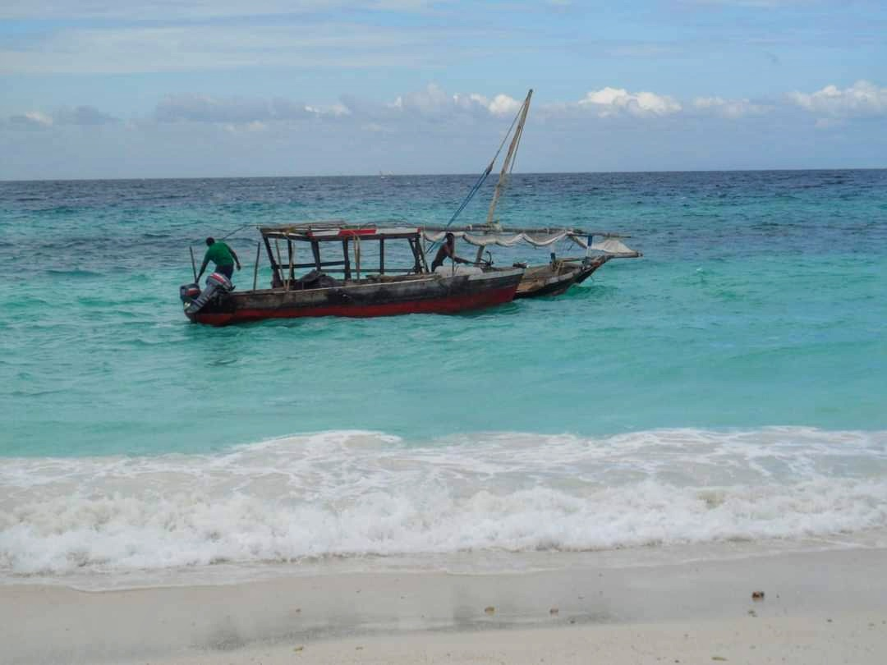

We are travelling around the islands of Polynesia.
8 December 2012, Mwanza airport We stepped out onto Mwanza’s single landing strip. It’s sunny, but not too hot. Pleasant breeze, could be from Lake Victoria. The sky is intensely blue and the growth on both sides is intensely green and even from here we can see women carrying harvest on their heads in the fields. We politely decline a taxi and the drivers direct us to the unmarked dala dala (minibus) stand. Two boys, laughing, teach us a few Swahili words as we wait. Asante. Karibu. Kwaheri. We forget them then, but soon enough, we’ll learn them well. Karibu will echo wherever we go. Karibuni-tena, you are very welcome in Tanzania. The minibus is full of chatter and incredibly friendly, not to mention costs an equivalent of 15 euro cents. The radio is blasting local reggae and more and more people get on, with bags full of fruit and efortless smiles. Snow-covered Berlin we left behind feels unreal, and so does time. We will soon notice that internet, booze or even the idea of wearing a watch don’t really enter our thoughts in this world.
9 December 2012, Mwanza A few initial observations: more places sell mobile credit than water. And everyone’s on their phones all the time. Women refuse to have their photo taken more often than men, which is a real shame since they look incredible. There is some fantastic Indian food in this country. According to a group of Abiturienten from south-west Germany volunteering in local schools, whom we shared a table with in an overcrowded place, the Hindu population is a relatively wealthy part of the society and you can count on their establishments for quality. They also talked about the advantages and disadvantages of Tanzania’s education system. Mwanza is the country’s second largest city and it’s hectic, messy and loud. But it’s off the tourist track, which makes it a lot easier to interact with people. In the middle of one of the markets, you can go up into the rocks and discover a peculiar open air workshop where a dozen-odd craftsmen recycle cans into mugs, lamps and some objects we never really figured out. That’s the first photo. In the second one, notice a stand selling Airtel credit in the background. We start a safari first thing in the morning.
13 December 2012, Simba Camp on the rim of the Ngorongoro Crater This is the day our safari to the Serengeti and the Ngorongoro crater ends. I genuinely can’t imagine that this place fits on the map somewhere. There are no seasons here, no history, no humanity at all – the safari Jeep is just another animal, we observe its solitary and herd behaviour. We saw a group of lion cubs playing in a puddle, adults watching over them. Flamingos in an orderly march. Wildebeest and zebra migration, queue stretching as far as the horizon. The Big Five. Cheetahs, kudus, hyenas and giraffes. Countless hippos and gazelles. We saw it all, but most importantly we got to feel a part of this primal, timeless place. How can the Serengeti be connected to Warsaw, to Berlin, to the world we came from by a system of roads? How can it have cell phone reception, or even fit on the same planet? Is the world in which all four of us are ploughing through their second attempt at a PhD the same one in which we are standing in an open-roof Jeep, wind in our hair, speeding through the endless savannah? It’s yellow as far as the eye can see, or green as far as the eye can see, and the wildebeest are waiting for the zebras to spot a predator and start running, the birds are picking insects off giraffes and there’s not another human being in sight. There was a lioness resting next to a half-eaten kill, and vultures already waiting for her to go away. We saw a leopard have his stealth approach towards a gazelle ruined by a herd of exited Jeeps following him along the road. We had an elephant drink from the water tank of our camp site, and another block our way as were driving through the Endless Plain. We were told to close the tents so the hyenas don’t come in and we heard lions roar at night. We wished upon shooting stars in the middle of the Serengeti. I thought of a wish and then saw the biggest shooting star slash the sky in half. No one else saw it. Watch out world, that one is coming true.

14 December 2012, Pare Mountains "They hate girls in this country." Janet, a 13-year-old student of the school we’re staying at said this in flawless English. All secondary and higher education in Tanzania is done in English, but Janet hasn’t even started high school yet. Her strong, entrepreneurial mother made sure she went to a Kenyan school when she was little. Tanzania might be more peaceful, but it’s the Kenyans that teach better English, she says. Here, the gender gap is much smaller that the neighbours’, just as religious conflicts are unheard of by the region's standard – despite Tanzania being equal part Christian, Muslim and Pagan with a healthy numbers of Hindus thrown in for good measure. People we talk to and the Lonely Planet agree that this is thanks to the legacy of Julius Nyerere, The Teacher, Tanzania’s beloved leader who negotiated the country’s independence and stayed in power until 1985. Still, Janet woes that many families would rather send a son to school than a daughter. We hear someone blow a whistle and the schoolyard turns quiet. A flag is being pulled down and everyone in the vicinity stands attention, since this is what the constitution demands. We do that, although teenage boys that have been playing volleyball with Ralf and Nora rebelliously pull faces throughout. Janet and a soon to be graduate of the secondary school, a former Head Boy with equally excellent English, take pleasure in telling us about other idiosyncracies of Tanzanian law. "The government is corrupt and nothing gets done." "But you guys are the future." "Yes we are." People in Tanzania dream big. A Physics teacher in a Mwanza suburb told us that he’s training kids so that in 10 years the country can finally have a world-class soccer team. Janet is going to be a lawyer in Australia. The sign at the gate of the school says “SPEAK ENGLISH”. Over the main door – “EDUCATION IS POWER”. In the photo, the school’s teachers are cooking. We asked if we can help, they let us stir some stuff in a big kettle over a huge fire. It was totally awesome.
16 December 2012, Pare Mountains At the end Nora is going to say that this is the trip that she learnt most from, though she can’t quite put her finger on what. Well, here are a few things I learnt in the last two days. Getting lost in the rainforest is no joke. One should make sure to wear sunscreen absolutely everywhere when going out on an equatorial lake at midday. Motorbikes don’t crash as much when it’s people who know what they’re doing driving them. African weddings with a Masai bride can be as dull as western ones, though the bride looked stunning. Oh, and Christmas carols are less annoying in Swahili.
Needless to say, we got lost in a rainforest. On a mountain so steep we had to slide down the mud holding on to lianas on the way down. And once you lose the path, or rather the person filling in for a guide loses the path, the visibility is next to nothing (they’re not kidding about the rich undergrowth) and there are damn thorns everywhere. I guess all in all we had a pretty good time or at least would do if we weren’t stuck there for hours with no food and water. We did contemplate the practicalities of a helicopter rescue though. We were actually crossing through this stuff. No machete involved.
As for the lake, sunburn’s a bitch but it really was worth it. SAM_1348
17 December 2012, Pangani I guess this is the same planet after all. At the bus station in Mwenga, as we were bargaining the ticket price and trying to negotiate our way out of the typical Mzungu overcharge, a short elderly man stepped in and helped us talk down the price. He said he’s a teacher – all teachers we meet say this straight away. I teach biology, chemistry and agriculture. His English was not only excellent but full of humour and character. Somehow Lisa mentioned she was born in Russia. Как дела? He asked where the rest of us were from. Ah! I went through Poland. it was a train on the way to London. East Germany. West Germany. Belgium. I was in London 3 days. Shopping, there was nothing to buy in Russia. Oh! Don’t tell her! (Meaning Lisa.) On the bus, John told us his story. When in 1961 Tanganyika became an independent state, rather than a British colony, the whole country had all of 33 university graduates. But three planes full of young people awarded scholarship were flown to Krasnodar to study medicine, agriculture and engineering. Some future medics went to Cuba. Some to Vietnam. They were all going to come back and build the socialist dream. John spent 5 years in Russia and got an MSci in Agriculture. He later came back to work in the central planning office, deciding on which crops the gradually formed work collectives should be planting. In 1985, Nyerere stepped down and his successor was pressured by the west to abandon socialism. Most historical sources today are critical of this pressure. According to the people we encountered, the main effect of transformation they can see is corruption. John, along with all of his fellow scholarship recipients, was forced to retire and awarded a next-to-nothing pension. Now, at 67, he works as a teacher. He tells us what his salary is several times, so he must consider it good. We discretely calculate it’s more than twice the national average, even though in Europe it wouldn’t even pass as an unemployment benefit. He said he has 9 children. His brother took some of these kids to raise because he had more money – this is also common, a guy we later met on Zanzibar talked about his “big father” and “small father” one being the father, the other the uncle who raised him. John’s eldest daughter has a PhD. During his time at university, John wanted to marry a girl named Svetlana, but her father refused. So I married a Tanzanian. Svetlana wrote to him afterwards, but he said he never replied. It would disturb my head, he said emphatically. He has polio. He slowly pulls out mint candy from his pocket, I wonder if he has high blood pressure. Police in green, military-looking uniforms get on the bus and conduct a superficial search, behind them a boy in a white shirt, suit vest and a Rasta belt recites the benefits of cosmetics he’s selling.
19 December 2012, Pongwe, Zanzibar We crossed to Zanzibar in a primitive wooden dhow with a couple of motors attached. The ocean waves are pretty intimidating when you’re sitting in a thing like this, they look a bit like the Great Old Ones are rising from the depths. Then the anchor wouldn’t catch and the skippers (though everybody’s a boat captain around here) anchored to another boat (photo). Already closing up on the island we saw it would be a different world to the rural Tanganyika (where except for the safari, we did our best to avoid the tourist trail) – the beach was lined with resorts and there were more white people in sight than in any place so far. Luckily, it didn’t mean the end to the adventure – we would rediscover it next day in Stone Town, and in any case it didn’t look quite so scary once you got off the Nungwi beach. But I guess this is a good place to pool some loose thoughts from the mainland.

First of all, bus travel. The bus system is actually incredibly efficient – most times we showed up to a station there was a bus waiting to go exactly where we needed it to. Then it would wait for another few minutes untill it’s full. Thing is, in Tanzania full means at least 6 people sitting in each 4-seat row. Then again, kids on the bus shared biscuits with us, to which we responded by sharing some fruit. And everyone chats. Just like people in the streets greet each other. Remembering the correct response to a particular greeting was usually the biggest challenge for us. Mambo poa. Zuri. Shikamoo. It’s probably not as confusing as it seemed to us… Luckily the wave-hand-and-smile is a universal remedy. Religion. We got asked about it a lot and we never figured out a good response. Tanzania is remarkably open-minded when it comes to religion (not so much homosexuality though, it’s still illegal), especially given the proximity of places like Somalia or Uganda, but still, when asked what religion we are we would get flustered and make faces to each other meaning “what do we say now? I really don’t think atheism is a thing around here…” and mumble something about our countries being mostly Christian. Then, by the time we reached the Muslim coast we ditched any attempt at honesty and would just say Christian. My favourite one of these conversations happened on the ferry to Dar Es Salaam on our last day. A well dressed kid, maybe 8 or 9 yo called out to Ralf. Hey, mzungu! (+ something in Swahili) Ralf: I don’t speak Kiswahili. Why not? Because I haven’t been here long enough. Are you Muslim? Am I Muslim…? No. Do you want to be Muslim? Not really. Why not? Muslim is supa fantastic. A perspective on the West: we encountered nothing but warmth and welcome. There were some interesting echoes of the world we know though. A roadside wooden kiosk with paint splashed over was curiously called “The Hilary Clinton Shop”. The two by far most frequent portraits were Bob Marley and Che Guevara. Yes, there were some Obama icons but not nearly as many as Che. I guess the socialist legacy lives on. There was an abundance of Christmas songs, and even Santa hats here and there. One of the most grotesque moments was when the beach bar in Pongwe, amongst the palms and the sand, played not just Let it Snow and all the other usual crap but… Christmas Is All Around. That’s right. Non-ironically. Anyhow, we’re in Pongwe, in an actual resort for one night. Empty beach, water as blue as can be, palms, shells and so on. Tropical paradise. Damn, how do normal tourists not get bored with this?
22 December 2012, Stone Town, Zanzibar Nora’s dreadlocks have been an instant conversation starter since the beginning of the trip (Rasta, Rasta! Hakuna matata!), but here on Zanzibar, everybody’s Rasta. Well, all the cool kids are anyway. And so we ended up hanging out with Zanzibari Rastas, and a few young European rebellious souls who moved to the island for various reasons. Everybody speaks good English, learns bits of random languages for fun, is gorgeous as hell and loves the world. They’re sailors working ships around the globe or just taking tourists around the archipelago, jewellery-makers sculpting in coins, DJs or tourism students. You have to do something related to tourism to earn decent money around here I guess. One of Stone Town’s most notable sights, the Old Fort, hosts reggae nights in its courtyard. And they’re happy, high, free love feasts for the cream of Stone Town boys and backpacker girls. Suddenly I had a thought that maybe getting picked out in the streets and invited here wasn’t so much about Nora’s dreads.